Homework 2: Geometry Processing
Overview
We implemented de Casteljau evaluation for Bézier curves and tensor-product patches, area-weighted vertex normals, half-edge edge flips and splits, and Loop subdivision. The first two parts turn control points into a smooth shape; the remaining parts change how a triangle mesh is shaded and connected.
The most useful insight was that the geometry and its connectivity play different roles. A flip changes which vertices are neighbors without moving them. A split creates a new vertex and four local triangles. Loop subdivision combines those local operations with weighted positions, so the same geometric cube can produce noticeably different smooth limits when its original face diagonals give the corners different valences.
We used the provided meshedit viewer for the images below. The curve figures use our six-point control-point file; the cube comparison also includes a symmetrically triangulated cube derived from the supplied
dae/cube.dae.
Section I: Bézier Curves and Surfaces
Part 1: Bézier curves with 1D de Casteljau subdivision
For consecutive points at one level, de Casteljau interpolation makes a shorter level at parameter t:
Our BezierCurve::evaluateStep applies this formula to each adjacent pair and returns one fewer
point. Repeating it five times for six controls leaves one point on the degree-five curve. The viewer uses
repeated calls both for the E visualization and for sampling the complete curve shown by C.
We chose a curve with two high controls and a low middle section to make the intermediate polygons easy to
distinguish.
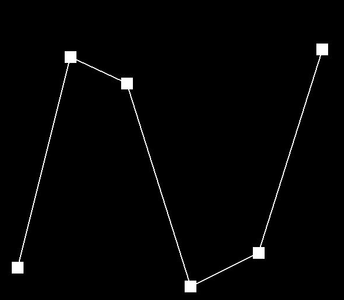
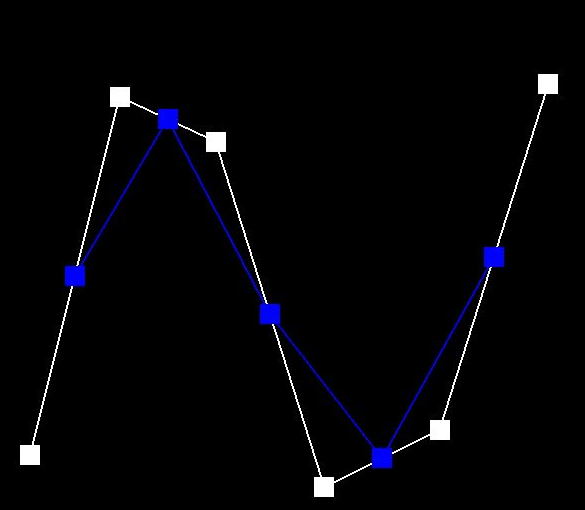
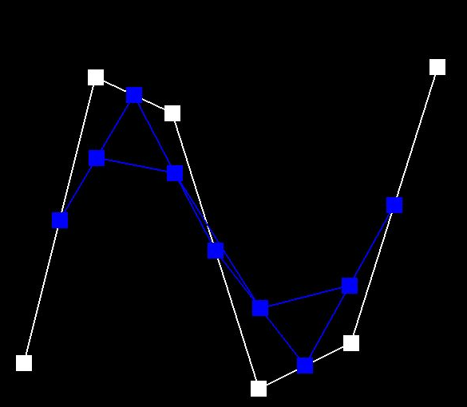
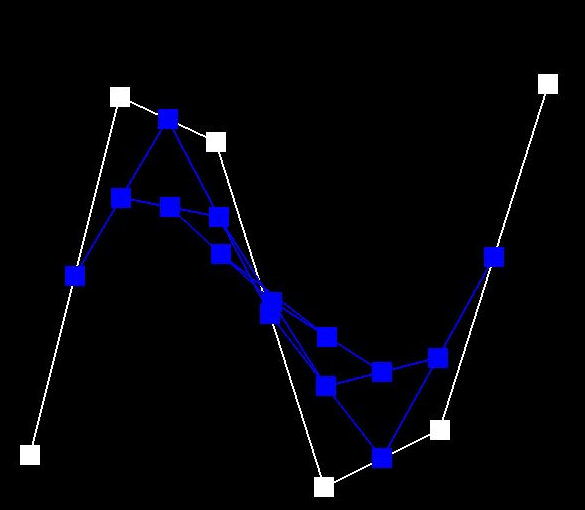
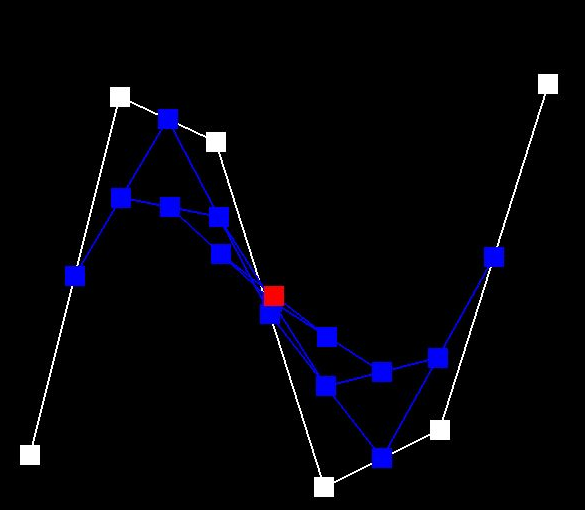
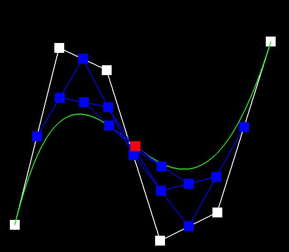
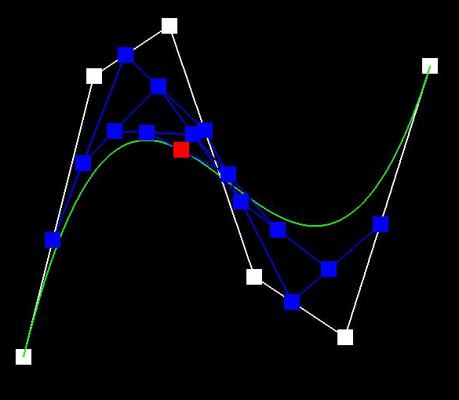
Part 2: Bézier surfaces with separable 1D de Casteljau
A tensor-product Bézier patch can be evaluated without a separate 2D interpolation formula. For a fixed
u, we run the 3D version of de Casteljau along each row of the control grid, leaving one intermediate
point per row. We then run the same 1D evaluator on that vector at v. In code, evaluateStep
performs one 3D interpolation level, evaluate1D repeats it until one point remains, and
evaluate(u,v) calls it along both axes.
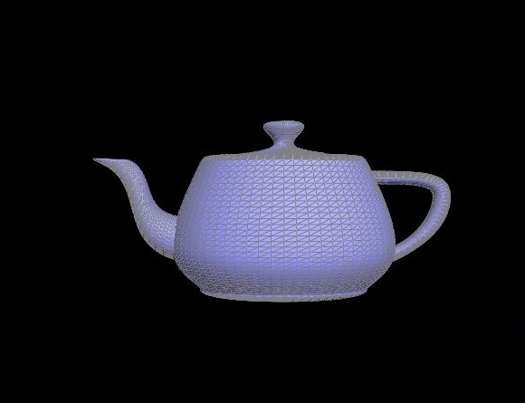
bez/teapot.bez, rather than the triangle-mesh .dae file. The visible triangles are
the viewer's tessellation of our evaluated patches.
Section II: Triangle Meshes and Half-Edge Data Structure
Part 3: Area-weighted vertex normals
Starting at a vertex's outgoing half-edge, we visit its incident faces with
h = h->twin()->next(). For each non-boundary triangle with vertices p,
\(p_1\), and \(p_2\), we accumulate \((p_1-p)\times(p_2-p)\). This cross
product has magnitude twice the triangle area, so large incident triangles receive proportionally more weight. We
normalize the sum once at the end and return a zero vector if its length is zero.
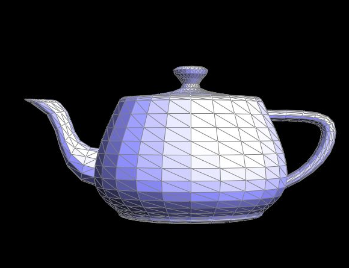
dae/teapot.dae uses a face
normal; the body appears faceted.Part 4: Edge flip
For an interior edge shared by triangles (a,b,c) and (b,a,d), the flip replaces diagonal
(a,b) with (c,d). We keep the same edge, half-edges, faces, and vertices; we only change the six
local half-edges' next, twin, vertex, edge, and
face references, followed by the incident representative pointers. The routine returns immediately
for a boundary edge. Recording all six half-edges before changing any links was the key way to keep the rewiring
auditable.
Our check was to select interior edges on the teapot and press F repeatedly. The local diagonals change, while the teapot silhouette and vertex positions stay the same. After each flip, the viewer clears its selection because the old selected feature may no longer represent the same local topology.

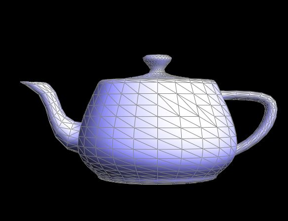
Part 5: Edge split
For an interior edge (a,b) with opposite vertices c and d, our split creates midpoint
\(m=(a+b)/2\). The original two triangles become four. We allocate one vertex, three additional edges, two
additional faces, and six additional half-edges, while reusing the original edge and half-edges for a–m.
We assign every local next, twin, vertex, edge, and
face reference, then update the representative pointers on the touched elements.
The two halves of the old edge remain marked old; the two spokes to c and d are marked new. These flags matter in Part 6, where only certain new edges are flipped. We checked the operation on the coarse icosahedron because the four triangles are much easier to see there than on the dense teapot. We then flipped one newly formed connection to check that the two local editing operations work together. Boundary-edge splitting is outside this implementation: the function leaves such an edge unchanged.
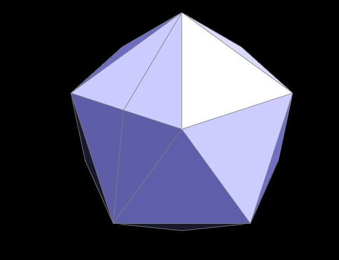
Part 6: Loop subdivision for mesh upsampling
Our upsampler first stores lists of the original vertices and edges. This prevents elements created by splitting from being processed as original elements in the same iteration. For an old vertex of degree n, we compute a new position using its one-ring neighbors:
For each original edge with endpoints a,b and opposite vertices c,d, we precompute its new vertex position as \(\frac{3}{8}(a+b)+\frac{1}{8}(c+d)\). We then split every original edge, assign that precomputed position to its midpoint, flip only new edges joining an old and a new vertex, and finally apply all stored positions. Delaying the position updates keeps every weight based on the same original mesh.
In the cube sequence below, repeated subdivision rounds off the original corners and edges; the coarse faceted cube approaches a smoother shape. A sharp feature loses its sharpness because Loop's weighted averages pull both old vertices and edge points toward their neighbors. A practical way to keep a ridge or corner more pronounced is to insert short support edges near it before subdivision, so the local averaging acts over a shorter distance. This is a topology-and-spacing effect, not a special crease rule in our code.
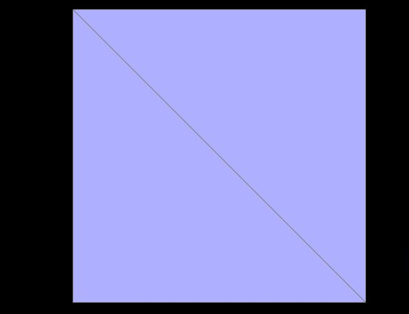
dae/cube.dae
contains one diagonal.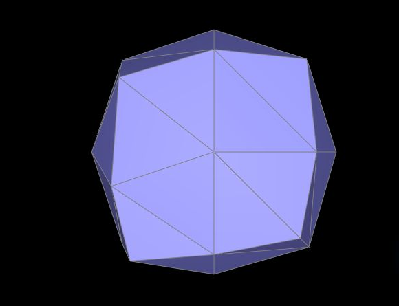
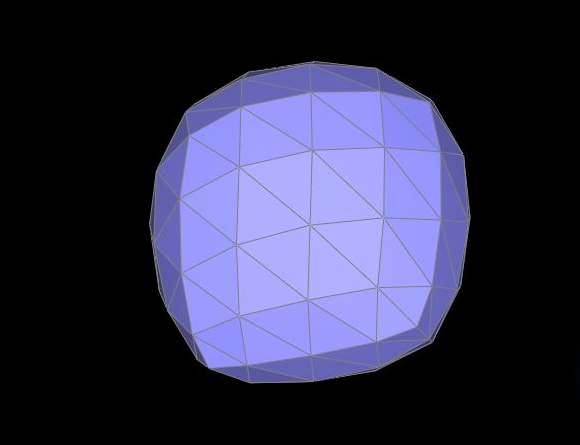
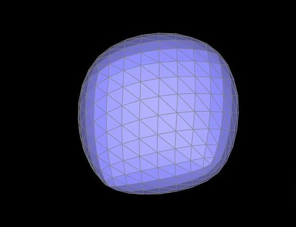
The diagonal of each original square connects only two of its four corners. Across six faces, that gives cube
corners different numbers and arrangements of neighbors, so Loop's valence-dependent weights break the cube's
symmetry. We tested a flip on one face to reverse its diagonal, then split that diagonal; the resulting four
triangles meet at the face center. Repeating the face-center split on all six faces makes every original cube
corner adjacent to three original cube edges and three face centers. The separate cube-symmetric.dae
asset encodes that same six-face preprocessing for a reproducible comparison. A flip alone merely changes which
two corners are favored; splitting each face diagonal removes that choice.
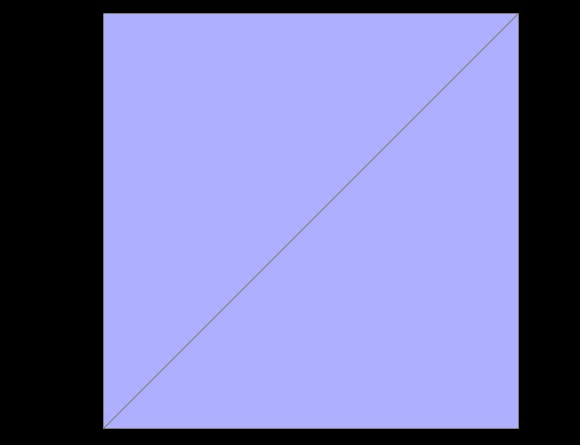
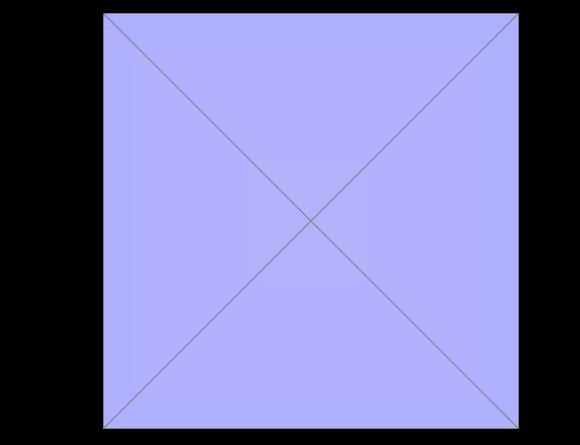
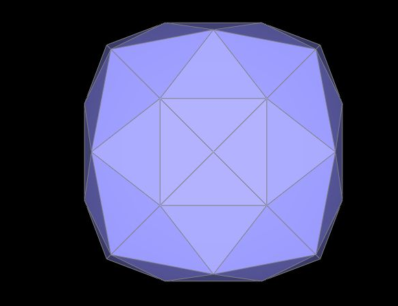
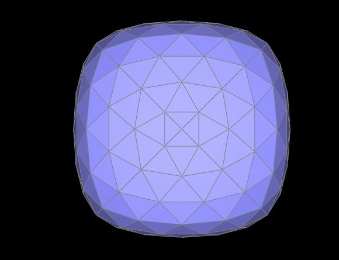
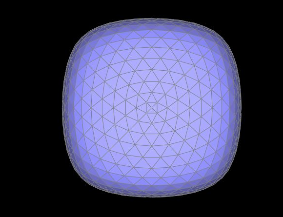